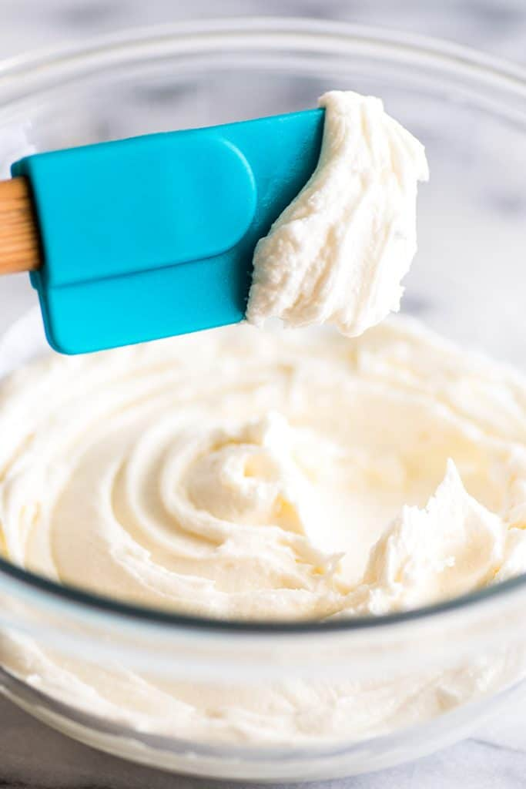

Vanilla Frosting

A sweet, spreadable topping for any cookies or cakes.
A sweet frosting with just a hint of vanilla that is ideal
for any homebaked cookies or other baked goods.
Adding some food coloring to give your desserts a fun, festive look.
- 6 tbsp of butter
- 4 1/2 cups of powdered sugar
- 1/4 cup of milk
- 1/2 tsp of vanilla
- Optional: Food Coloring
- Thoroughly cream butter.(Recomended that your butter be at least room temperature.)
- Add the rest of the indgedients to butter and combine.
- Feel free to add more powdered sugar in order to get the proper consistency for your frosting.
- Optionally split frosting into seperate bowls and add food coloring a few drops at a time to get multiple colors.
- Using a knife or spatula, spread frosting onto baked goods or alternativley grab a spoon and dig in.